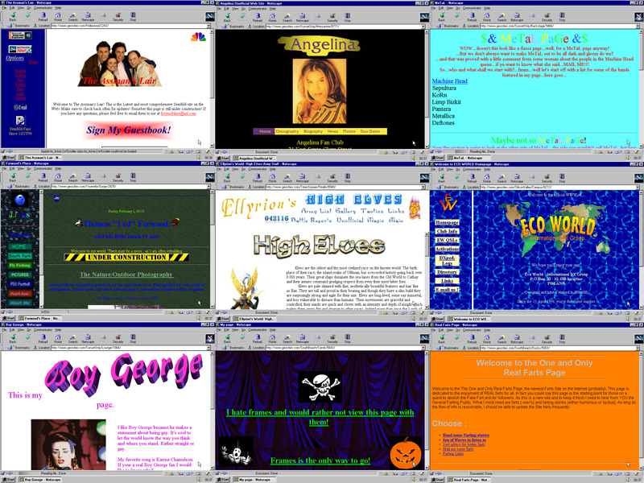

Esta é a página 1

Os sites da Web 1.0 tinham mais ou menos a mesma "cara". Eram desenvolvidos com frames, que possibilitavam a
compartimentação de conteúdo e a reutilização de código.
Também era possível simular a experiência do usuário de um aplicativo para desktop. O CSS ainda era pouco difundido e o conteúdo era estilizado diretamento no HTML. Com o passar do tempo, os desenvolvedores foram percebendo que era uma má ideia misturar as camadas da aplicação web (marcação/ estrutura/ conteúdo, estilização e funcionalidade).
Aos poucos a web passou a ser mais interativa e os sites deixaram de focar somente na empresa que os desenvolvia e passaram a focar no usuário que os consumia.